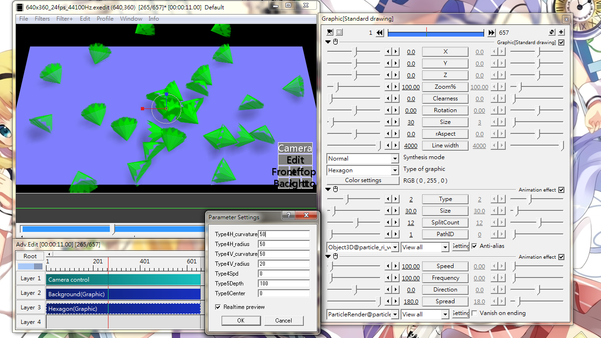
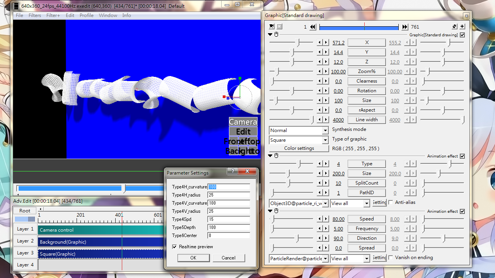
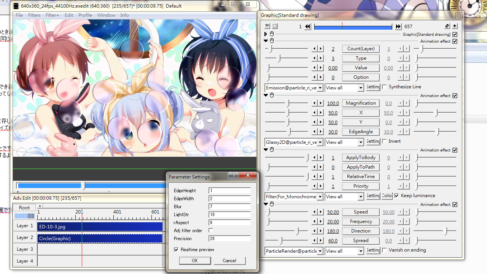

Fig18A: One of the output type(2:cone) of Object3D.

Fig18B: One of the output type(4:curved surface) of Object3D. Emission origin is on the right end.

Fig18C: Glassy2D. Making particles look like made up of glass using magnification, blur and bevel.
Object3D
Emit some basic 3D shapes, or output some PMD model. Since the base shape is used for the object's face, using Circle or Triangle as base shape may looks bad.
Sliders
Type
0: 6-face Cube
1: Sphere
2: Cone
3: Double-cone (like tetrahedron)
4: Surface bending
5: Rod, with depth along the z-axis
6: MikuMikuDance model data (requires 3rd party utilities, not yet ported to English.)
A magnification value for type 4 and 6, a simple size value for other types.
SplitCount
The fineness of 3D surfaces.
Type 1: smoothness of sphere
Type 2,3: number of faces
Type 4: smoothness of curvature
Type 5: outline threshold
PathID
Path ID pointing to .dat file generated from pmd model data. For type 6 only and should be used with Path@
Check box
Anti-alias: When checked, smooth out the object outline a bit.
Setting dialog
Type4H_curvature
Defines the degree of bending.
At 100, it acts like the surface completely wraps around a rod with radius as defined in Type4H_radius. At 0, the surface is unwrapped.
Type4H_radius
Defines the radius of a virtual rod which the surface would wrap around. A smaller value cause more prominent curvature.
Type4V_curvature
Similar to Type4H_curvature but curves around another axle.
Type4V_radius
Similar to Type4H_radius but defines the other axle.
Type4Spd
Curvature changes as the particle move along. See Fig18B for reference.
Type5Depth
Length of the rod.
Type6Center
Change the center of the model. At 0, it is the default center of PMD model, usually in-between two feet.
Glassy2D
Make particles to have a glass feel (Fig18C). This effect is limited by the AviUtl Max Resolution setting. If project dimension+ 2* particle dimension > max dimension, the particles will not be rendered correctly.
Sliders
Magnification
< 100: as if convex lens (magnify)
> 100: as if concave lens (shrink)
X
Visible top (horizontal)
50: Center; 0: Left; 100: Right
Y
Visible top (vertical)
50: Center; 0: Top; 100: Bottom
EdgeAngle
Angle of shadow
Check box
Invert: when checked, invert the background image where the particle is.
Setting dialog
EdgeHeight
How thick the shadow should be.
EdgeWidth
Width of shadow.
Blur
Blur size.
LightStr
Light strength for blur.
rAspect
Aspect ration when applying blur.
Adj filter order
When checked, the Bevel effect will be applied last.